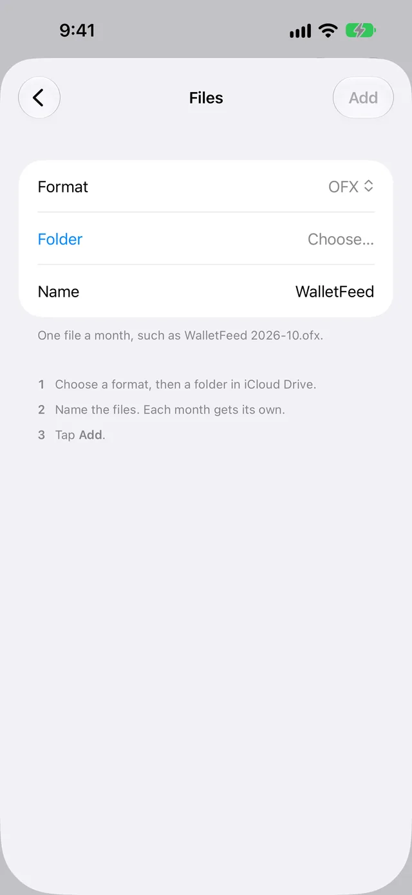

Import Apple Card transactions into Quicken
WalletFeed saves your Apple Card, Apple Cash and Savings transactions from your iPhone to OFX files in iCloud Drive, and you import the files into Quicken for Mac. Quicken for Windows cannot import these OFX files, but it can import a CSV file from WalletFeed after you change a copy to Quicken's format.
Before you start
- An iPhone with iOS 26 or a newer version
- WalletFeed, with access to your Wallet accounts
- WalletFeed Pro, a subscription with a 1-week free trial, or a one-time Lifetime purchase
- Quicken for Mac, or Quicken for Windows with a spreadsheet app
- iCloud Drive on your iPhone and on your computer
WalletFeed is available only in the US.
Step 1: Add an OFX file in WalletFeed
-
On your iPhone, open WalletFeed.
-
Tap Destinations.
-
Tap + at the top of the screen.

-
In the search field at the top, type
Quicken.
-
Tap OFX File.
If you do not have WalletFeed Pro, the WalletFeed Pro screen opens first. After you start the free trial or get a plan, the Files screen opens.
-
Make sure that Format shows OFX.

With OFX, WalletFeed writes one file for each month.
-
Tap Folder.
-
Select a folder in iCloud Drive.
WalletFeed shows the name of the folder in the Folder row.
-
To use a different name for the files, type the name in Name.
If you do not change the name, the file for October 2026 is
WalletFeed 2026-10.ofx. -
Tap Add.
-
When WalletFeed shows Save Transactions to Files?, tap Save.
The message gives the name of the folder and the data that the folder receives. It also gives the Wallet accounts and the start date of the transactions, if there is one. Because an OFX file has only posted transactions, the message uses the words “posted transactions”. If you tap Cancel, WalletFeed removes the new destination.
WalletFeed then writes a file for each month that has posted transactions. In Destinations, the new destination has the name WalletFeed, or the name that you typed.
Step 2: Import a file into Quicken for Mac
Quicken for Mac imports the file with the same menu item as a file that you download from the website of a bank.
- On your Mac, open Quicken.
- Make a backup of your Quicken data file.
- Click File › Import › Bank or Brokerage File (OFX, QFX).
- Click Browse.
- In the iCloud Drive folder that you selected in WalletFeed, select the file for one month, for example
WalletFeed 2026-10.ofx. - Click Open.
- On the Choose Your Accounts screen, select the Quicken account that receives the transactions, for example your Apple Card account.
- Make sure that the new transactions are in that account.
- To import the file for a different month, do steps 3 to 8 again.
For more information about these steps, refer to Quicken's instructions to download and import transactions.
Use a CSV file with Quicken for Windows
Quicken for Windows cannot import the OFX files from WalletFeed. It imports QFX files (Web Connect files) that you download from the website of a bank. WalletFeed does not write QFX files.
Quicken for Windows can import a CSV file only in Quicken's CSV format. The columns of a WalletFeed CSV file are in a different sequence, and its dates are in a different format. Thus, before you import a file, you must change a copy of it to Quicken's format.
-
On your iPhone, do step 1, with these changes on the Files screen:
- In Format, select CSV.
- In Save As, select One File per Month.
WalletFeed then writes a CSV file for each month. If you do not change the name, the file for October 2026 is
WalletFeed 2026-10.csv. -
On your PC, open the iCloud Drive folder that has the files.
-
Make a copy of the file for one month.
-
Open the copy in a spreadsheet app.
-
In the copy, change the columns and the dates to Quicken's CSV format.
For the columns and the date format, refer to Quicken's instructions to import transactions from a CSV file.
-
Save the copy as a CSV file.
-
In Quicken, click File › File Import › Banking Transactions › From (.CSV) File.
-
Click Choose .CSV File to Import….
-
Select the copy of the file.
-
Click OK.
The CSV file also has pending transactions. Its Status column shows if a transaction is pending. For the columns of the file, refer to the page about CSV files.
WalletFeed can also write QIF files, but Quicken for Windows cannot import a QIF file into a credit card, checking or savings account.
Data that Quicken receives
This table shows the data in the OFX file for each Wallet field.
| Wallet | In the OFX file |
|---|---|
| Merchant | The name of the payee, with a maximum of 32 characters. If Wallet has no merchant name, WalletFeed uses the description. |
| Amount | The amount of the transaction. Purchases are less than zero. Payments and refunds are more than zero. |
| Currency | The currency of the statement, for example USD. |
| Date | The date of the transaction. |
| Posted date | The date that the transaction posted. |
| Type | The type of transaction, for example a purchase, a payment, a fee or a transfer. |
| Description, card statement text and foreign amount | The memo. WalletFeed does not add text that is the same as the name of the payee. |
| Transaction ID | The ID of the transaction. It stays the same each time that WalletFeed writes the file. |
| Account | A different statement for each of your accounts. The type is credit card for Apple Card, checking for Apple Cash and savings for Savings. |
The file does not include the WalletFeed category or the balance of the account.
Changes to the files
While WalletFeed is open, the files receive changes in seconds. When WalletFeed is closed, iOS starts WalletFeed in approximately 1 hour or less after a change in Wallet. This occurs only if Background Sync is on in Settings › Sync.
If WalletFeed cannot open the folder at that time, the files get the changes when one of these occurs:
- You open WalletFeed.
- A Shortcuts automation starts WalletFeed.
- iOS starts WalletFeed while your iPhone is on its charger.
An OFX file has only posted transactions. WalletFeed adds a pending charge to the file after the charge posts. A declined charge does not post, and thus it is not in the file. A refund is a different transaction, with an amount that is more than zero.
WalletFeed puts each transaction in the file for the month of the transaction date. When a transaction in a month changes, WalletFeed writes the file for that month again. Thus, a file can change after the end of its month, for example when a charge from the last day of that month posts.
Each transaction keeps the same ID each time that WalletFeed writes the file. But Quicken's instructions tell you not to import transactions for the same dates two times, because Quicken can then show a transaction two times.
If Wallet removes a transaction, WalletFeed removes it from the file. WalletFeed cannot remove the transaction from Quicken.
WalletFeed keeps no copy of the files. The files are in your iCloud Drive. WalletFeed has no account and no WalletFeed servers.
Send previous transactions
A new OFX File destination also receives your previous transactions, from the start date in Settings › Sync › Initial History. Initial History is All until you change it. To change the start date, do these steps before you add the destination:
-
In WalletFeed, tap Settings (the gear button) at the top of the screen.
-
In Sync, tap Initial History.

-
Select Today, 30 Days, 90 Days, 1 Year or All.
After you add a destination, you can use Send History to write previous transactions to its files:
-
In Destinations, tap the destination, for example WalletFeed.
-
Tap Send History.
-
Select 30 Days, 90 Days, 1 Year or All.
WalletFeed writes the files for those months again. While WalletFeed writes the files, the destination shows Sending History and a progress bar.
-
In Quicken, import the files for the months that you did not import previously.
To stop before WalletFeed writes all the files, tap Send History › Stop Sending.
Change or remove the destination
- In WalletFeed, tap Destinations.
- Tap the destination, for example WalletFeed.
- Make one of the changes in this table.
| Change | On the destination screen |
|---|---|
| Send only some transactions | Set Filter to on. Then set Include, Minimum, Accounts, Categories or Exclude. |
| Send only one Wallet account, for example Apple Card | Set Filter to on. Tap Accounts. Then select the account. |
| Use a different folder | Tap Change Folder. Then select the folder. WalletFeed writes all your transactions to the new folder. |
| Stop the changes to the files for a time | Set Enabled to off. |
| Change the name of the destination | Type a different name in Name. The names of the files stay the same. |
| Remove the destination | Tap Delete. Then tap Delete again. |
When you remove the destination, the files stay in the folder. Quicken keeps the transactions that you imported.
If there is a problem
If WalletFeed shows “Couldn't open this folder.”
WalletFeed cannot get access to the folder that you selected on the Files screen.
- Tap Folder.
- Select a different folder in iCloud Drive.
If the destination shows “Can't open the folder. Choose it again.”
WalletFeed does not have access to the folder of the destination at this time.
- In Destinations, tap the destination.
- Tap Change Folder.
- Select the folder again.
If the folder has no file for a month
WalletFeed writes a file for a month only when the month has posted transactions.
-
In Destinations, tap the destination.
-
Tap Send Test.
The folder then gets
WalletFeed Test.ofx. This file has a sample purchase of $4.20. If this file is in the folder, WalletFeed can write files to the folder. -
Do not import
WalletFeed Test.ofxinto Quicken.
If the file does not have new transactions
WalletFeed did not write the file after the last change in Wallet.
- On your iPhone, open WalletFeed.
- Tap Settings at the top of the screen.
- In Sync, tap Sync Now.
If a pending charge is not in Quicken
An OFX file has only posted transactions. WalletFeed adds the charge to the file after the charge posts.
- Wait until the charge posts in Wallet.
- Import the file for that month again, as in step 2.
- If Quicken then shows a transaction two times, delete one of the two transactions.
If Quicken shows a transaction two times
Quicken imported the same transaction two times, for example when you imported the file for a month two times.
- In Quicken, delete one of the two transactions.
If Quicken has a transaction that Wallet removed
WalletFeed removes the transaction from the file, but it cannot remove the transaction from Quicken.
- In Quicken, delete the transaction.
If Quicken for Windows does not import the OFX file
Quicken for Windows cannot import the OFX files from WalletFeed.
- Add a CSV file in WalletFeed, as in Use a CSV file with Quicken for Windows.
If Quicken for Windows does not import the CSV file
The file is not in Quicken's CSV format. Quicken then shows a message that gives the necessary changes.
- Change the copy of the file as the message tells you.
- Import the copy again, as in Use a CSV file with Quicken for Windows.
If Destinations shows “Sync Requires Pro”
You do not have WalletFeed Pro at this time. WalletFeed keeps the destination but does not write the files.
- In Destinations, tap Upgrade.
- Start the free trial, or get a plan.
Related
Updated October 30, 2026